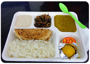

Kanha Tiffin Service
Contact Us: 9115813527
Kanha Tiffin Service
Contact Us: 9115813527


Tiffin Service in Mohali Offered by Kanha Tiffin Services
Kanha Tiffin service offers complete meal solutions for individuals at home or the office. We ensure that every meal we provide is like a home-cooked meal. Our recipes are designed to keep variety in every meal, ensuring new flavors every day throughout the month.
At Kanha Tiffin service, we aim to provide healthy, traditional, home-cooked food that you won’t find in restaurants. Our meals, served every day for breakfast, lunch, and dinner, are freshly prepared using high-quality ingredients and served at your doorstep within your budget.

Why Kanha Tiffin Services?
- Use of quality food grains, oil, and fresh vegetables.
- Prepared in hygienic conditions.
- Diverse Tiffin Menu.
- Nutritious and Tasty Food.
- Special dishes on festive occasions.
- Affordable prices.
Follow Us